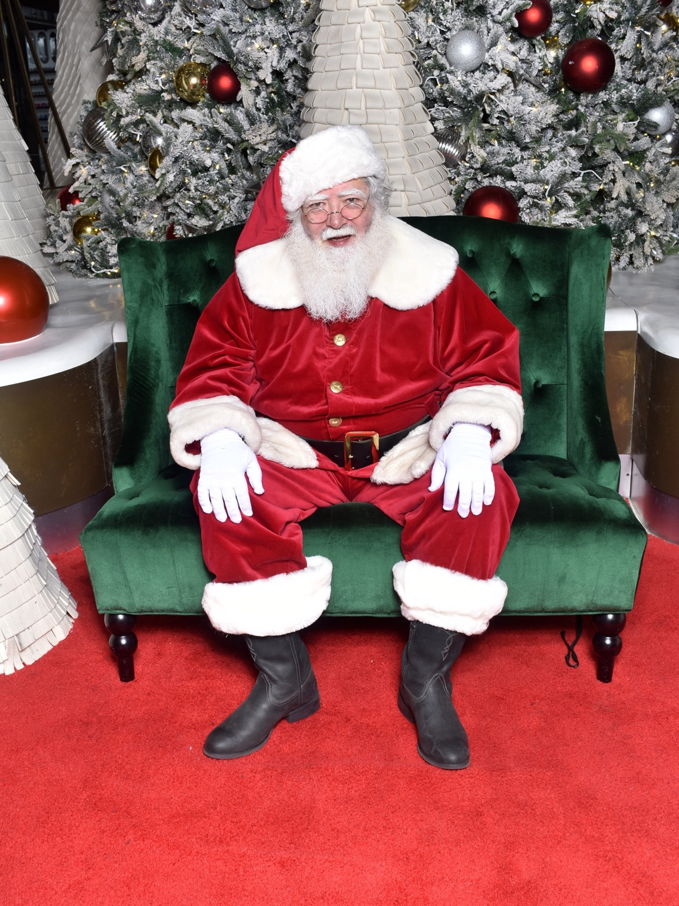

Alexander Ferrari Miller
3549 North D Street
San Bernardino, CA 92405-2103
+1 (323) 681-7588
Alexander.Ferrari.Miller@gmail.com
https://AlexanderFerrariMiller.com

Performance Summary
Character actor, singer, and live performer with experience spanning professional seasonal character work, interactive comedy, musical theater, opera, choral singing, historical character performance, and dance. Experienced in maintaining character during extended audience interaction, working with accents and comic roles, performing as part of ensembles, and engaging directly with audiences in both scripted and improvisational settings.
Professional Character Performance
Mall Santa — Seasonal
Culver City, CA — Christmas 2025
- Portrayed Santa Claus in a professional retail holiday environment.
- Interacted directly with children, families, photographers, managers, and other members of the Santa team.
- Maintained character throughout long, high-volume shifts and repeated audience interactions.
- Adapted individual interactions to children and families while helping create positive and memorable experiences.
- Completed professional Santa training at Northern Lights Santa Academy before obtaining seasonal Santa work.
Pasta Al Dente — Tony and Maria’s Italian Comedy Wedding
Greater Boston and Cape Cod, MA — Approximately 2 years
- Performed a recurring scripted role in the interactive comedy production.
- Portrayed an Italian priest using an exaggerated Italian accent as part of the character.
- Performed approximately 12 shows per year, primarily on Cape Cod.
- Worked directly with live audiences in an interactive theatrical environment.
- Delivered the role with strong comedic response.
Renaissance Pleasure Faire
Massachusetts
- Portrayed Dr. Thomas Campion, the English physician, poet, and composer.
- Remained in character while interacting directly with Faire patrons.
- Serenaded patrons with Thomas Campion’s original works.
- Combined historical characterization, singing, and improvisational audience interaction.
Opera
Principal, Supporting & Ensemble Roles
- Masetto — Don Giovanni
- Leporello — Don Giovanni
- Papageno — The Magic Flute
- Guglielmo — Così fan tutte
- Figaro — The Barber of Seville
- Figaro — The Marriage of Figaro
- Chorus — Dido and Aeneas
- Calavera / Diego Rivera Understudy —
Frida, San Francisco City College, Summer 1994
- Performed as one of the Calaveras, appearing on stage through most of the opera and manipulating elements of the set.
- Understudied the role of Diego Rivera.
Musical Theater & Stage
- Scientist — Li’l Abner
- Hines — The Pajama Game
- Dancer — My Fair Lady
- Apostle / Ensemble — Jesus Christ Superstar, Turtle Lane Playhouse, Newton, MA
- Franz — The Sound of Music, Turtle Lane
Playhouse, Newton, MA
- Portrayed Franz, the butler, using a German accent.
- Received strong comedic responses from audiences.
- Ebenezer — Scrooge, Turtle Lane Playhouse,
Newton, MA
- Portrayed Ebenezer, Scrooge as a young man.
- Officer Krupke — West Side Story, Greater Boston area
- Fat Prince — The Caucasian Chalk Circle, University of Massachusetts Lowell
Choral & Vocal Experience
- Ensemble Singer / Soloist — Westwind International Folk Ensemble, Oakland, CA
- Oberlin College Choir
- Oberlin College Musical Union
- Troubadors
- Newton North High School Choir
- Informal vocal performances at piano bars, notably The Alley in Oakland, CA
- Informal performances at various karaoke venues
Dance Experience
- Céilí dancing — The Starry Plough, Berkeley, CA
- Irish set dancing — The Burren, Somerville, MA
- Contra dancing — Massachusetts and California
Training & Education
Northern Lights Santa Academy — Professional Santa Training, Summer 2025
Oberlin College — Bachelor of Arts, Russian/Soviet Studies
University of Massachusetts Lowell — Approximately 1 year of undergraduate mathematics study
Additional Performance Strengths
Character performance, live audience interaction, comic timing, accents, improvisational interaction, singing, choral singing, opera, musical theater, historical characterization, ensemble performance, dance, public speaking, extended in-character performance, and high-volume public interaction.